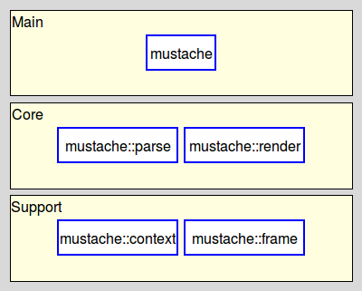
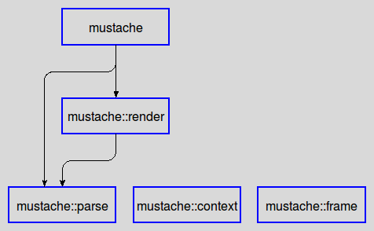

mustache_development - Mustache - The Developer's Guide
Welcome to the Mustache project for Tcl, written by Andreas Kupries.
It provides a set of five related Tcl packages for the parsing and rendering of mustache-style logic-less templates, plus an application for easy command-line access to the functionality.
For availability please read Mustache - How To Get The Sources.
The audience of this document are anyone wishing to modify Mustache in any way, shape, or form. This can be a maintainer fixing bugs, a developer adding functionality, or patching it to accommodate local circumstances, etc.
Please read
first, if that was not done already. Here we assume that the sources are already available in a directory of your choice, that it is known how to build and install the project, and that all the necessary requisites are available.
Mustache requires the following tools going beyond those needed for build and installation.
Processor for diagram-based figures. See package tklib.
Processor for doctools-based documentation files, i.e. the ".man" files under "doc/". See package tcllib.
This requirement is optional. If a Tcllib providing the package dtplite is installed then kettle will use the package in favor of the external application.
Mustache (currently) does not have demonstrations, nor examples.
The directory structure of the sources is as explained below:
The main file of the kettle-based build-system.
Main directory for all documentation.
Based on the doctools package and tools provided by Tcllib.
Main directory for all diagrams and figures used by the documentation.
Based on the diagram package and tools provided by Tklib.
Compiled documentation (manpages and markdown). Part of the repository for
easy access from the repository's web interface (embedded documentation), and
quicker installation (no need to compile during the installation process itself).
Main directory for the test-suite.
Based on the tcltest package distributed with the Tcl core.
Main directory for the provided packages.
Main directory for the provided applications.
Based on the tcltest package distributed with the Tcl core.
Package mustache.
Package mustache::context.
Package mustache::frame.
Package mustache::parse.
Package mustache::render.
Our build-system is based on kettle, as already explained in the Mustache - The Installer's Guide. Beyond the targets useful for installation it also provides targets aiding developers and maintainers. These are:
% /path/to/mustache/build.tcl validate-doc
% /path/to/mustache/build.tcl doc
% /path/to/mustache/build.tcl figures
The most basic execution of the test-suite is done with
% /path/to/mustache/build.tcl test
When the test-suite reports issues with the framework use of the more extended form below is indicated, with a <stem> of your choice. This will generate a number of files whose name starts with the prefix "<stem>.". These will contain extended test logs, details about errors and failures, etc.
% /path/to/mustache/build.tcl test --log <stem>
All packages belong to one of two layers, as shown below:

Note that:
Packages marked with a dashed border are private.
Packages marked with an unbroken blue border are fully public.
The dependencies between the packages are very straight-forward:

Mustache - The Developer's Guide
Both the package(s) and this documentation will undoubtedly contain bugs and other problems. Please report such at Mustache Tracker.
Please also report any ideas you may have for enhancements of either package(s) and/or documentation.
Copyright © 2019-2021 Andreas Kupries
Copyright © 2019-2021 Documentation, Andreas Kupries